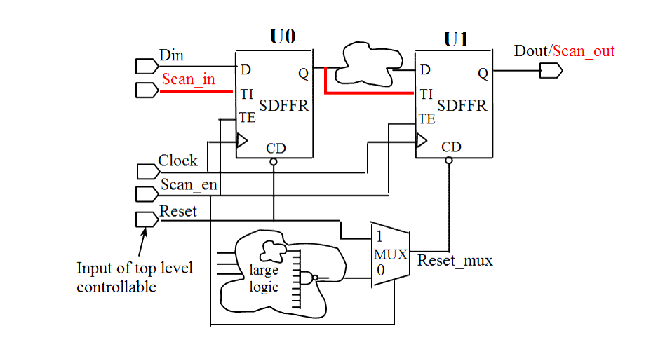

| Description | In cases where a flip-flop also has a set pin, this pin must be controllable in test mode to ensure that the flip-flop will not be set by the combinatorial logic, because this removes the flip-flop controllability and therefore reduces test coverage. |
| Policy | DESIGN |
| Ruleset | DFT |
| Language | VHDL/Verilog |
| Type | Hardware |
| Severity | Error |
This is an example of valid Verilog code, followed by a circuit diagram that illustrates the correct approach:
module ntl_dft51_top; ... wire Reset_int; // interior generated signal wire Reset_mux; // Muxed reset signal: Scan_en = 1 -> Reset_mux = Reset // Reset_mux is controllable during test mode because it is // connected to Input of top level ... // Scan DFF with reset-- SDFFR SDFFR U0(.D(Din), .CP(Clock), .CD(Reset), .TI(Scan_in), .TE(Scan_en), .Q(net_01)); //U0.CD (reset pin) pin is controllable from the input port of top level ... // Uncontrollable logic to generate Reset_int, so need a MUX to select a controllable reset MUX I0(.A(Reset_in), .B(Reset), .S(Scan_en), .Z(Reset_mux)): SDFFR U1(.D(net_01), .CP(Clock), .CD(Reset_mux), // Reset_mux .TI(net_01), .TE(Scan_en), .Q(Dout)); endmodule